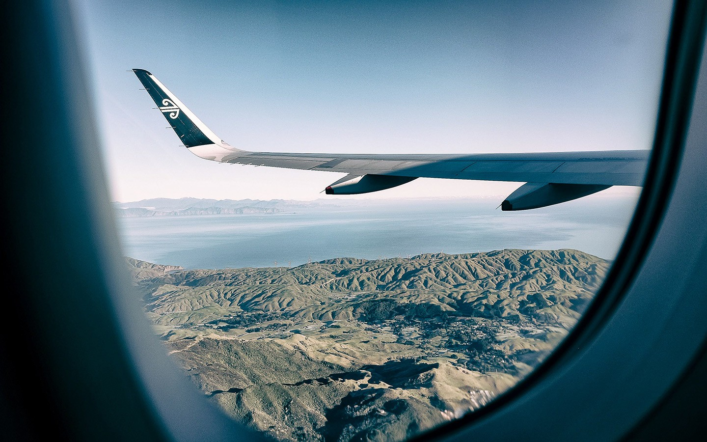
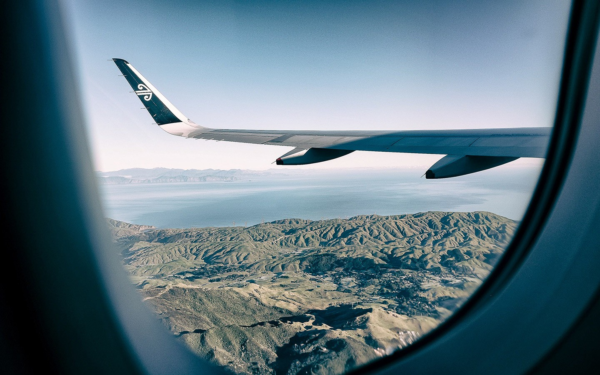

HomePage
HomePageSports
Sport has been part of my life since forever
Whether it has been part of everyday activiites or something that had to be done in school I always found a great pleasure in competing against other people.
My favorite disciplines would include :
Football
-Volleyball
-Basketball
-Rugby
I have been part of school representative teams for first two and I believe that some of the
adversities and achievements made me a better person. It allowed me to understand what
effort really is and how without it, it is nearly impossible to achieve anything.


Travel
My favorite hobby is travelling. I like all kinds of travel: by car, by train, by plane, and travelling on foot. But I have never travel by the ship yet. I love to travel without a group and without a guide, despite the fact that I often find ourselves in a difficult situation in unfamiliar places. Usually, I travel with my husband or with my friends. Most of all I like to travel by car and spend a little time at different places. Although long journeys are tiring me sometimes, but that doesn't stop me. First of all, it’s always nice to stay in a different place for a change. Secondly, I’m interested in seeing new sights, exploring different cultures and else. Third, I love to spend time in beautiful places and admire the beauty of the natural attractions such as mountains, waterfalls, forest lakes, seas and oceans, forests, valleys, hills, etc. I have been in the mountains with my friends many times. Also I visited some European countries. I was in London, Prague, Vienna, Belgrade, Istanbul and in other cities. Travelling gives me a good opportunity to learn a lot about the history of the country I visit, to see cultural and historical places, to meet people of different nationalities, to learn a lot about their traditions, customs and culture. In other words. I can expand my worldview and my mind. In the future I'm going to visit many countries of the world, in various remote and wild places with beautiful scenery such as Colombia, Cambodia, Malaysia, Brazil, Nepal.
 
